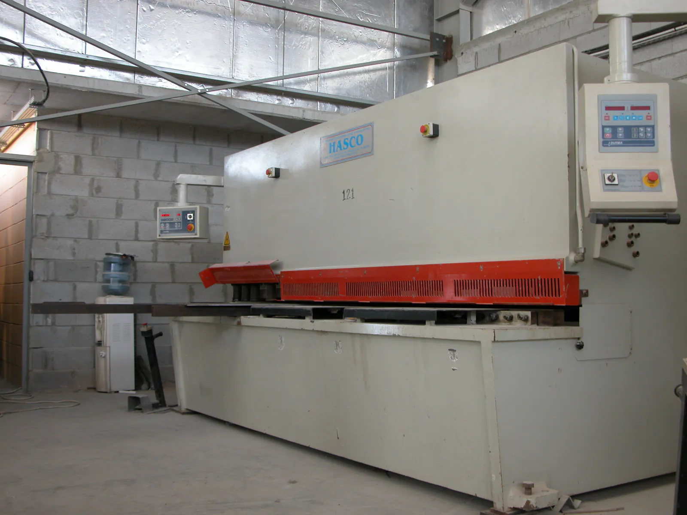
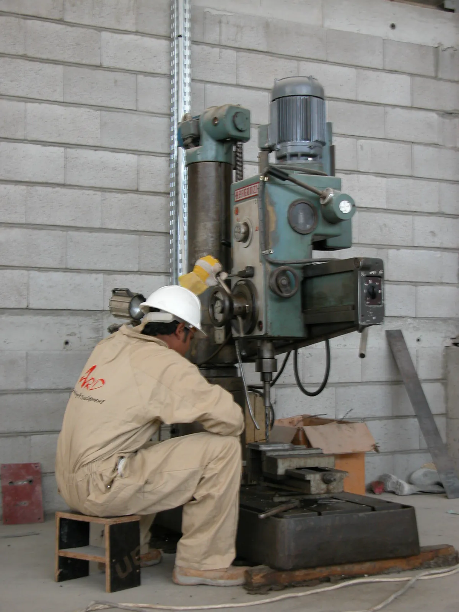

On our shop floor
The ribs of the dome were set out full size and welded in the workshop, so every connection was checked before anything went up to the roof.

Structural steel, concrete, MEP and historic restoration, built by our own engineers and crews. Steel and stainless are made in our workshop in the Sayliyah industrial area.
We build medium-sized projects in Qatar, all trades. Mostly the ones with an awkward site, a tight programme or engineering that other contractors would rather not take on.
Our secret is no secret: a systematic plan for every step of the project, personal attention to the smallest detail, and a craftsman's care in the work.
The central skylight steel structure at Al Jassra Hotel in Souq Waqef, 2012, for the Private Engineering Office. We fabricated it, supplied it and put it up.
The ribs of the dome were set out full size and welded in the workshop, so every connection was checked before anything went up to the roof.

The frame assembled on the hotel roof in Souq Waqef, in the middle of the old market.

Our part is the steel structure: the frame that carries the coloured glass.

Central Skylight Steel Structure, Al Jassra Hotel. Completed in 2012.
Client: Private Engineering Office · Fabrication, supply & erectionA selection from our project list in Qatar. Most were design, fabrication, supply and erection by our own teams.
| No. | Project | Client | Location | Year |
|---|---|---|---|---|
| 01 | Central skylight steel structure Steel | Private Engineering Office | Al Jassra Hotel, Souq Waqef | 2012 |
| 02 | HMC nursing facility steel bridge Steel | Hamad Medical Center | HMC compound, Wadi Al Sail | 2013 |
| 03 | Concrete works, basements 1 & 2 and ground floor Concrete | I.T.D. Qatar | Sarah Tower, West Bay | 2013 |
| 04 | Steel structures for lobby works Steel | C.E.G. Qatar | Shumookh Towers, Hamad Bin Suheim Road | 2013 |
| 05 | Two steel buildings: wood factory & store Steel | Decorelle Qatar | Salwa Road, Sayliyah | 2013 |
| 06 | Roof top floor addition Steel | Private Engineering Office | Al Gumrok Hotel, Souq Waqef | 2013 |
| 07 | Steel structure & MEP works for offices SteelMEP | Raytheon / Posco | Raytheon site, Abou Samra Road | 2012 |
| 08 | Five courts closing skylights Steel | Private Engineering Office | Najadah Hotel, Souq Waqef | 2012 |
| 09 | Steel / aluminium catwalk for the World Trade Center Steel | Folda Qatar / Arabtec | World Trade Center tower, Corniche | 2012 |
| 10 | Media mesh giant screens, steel structures Steel | G.E.T. Power / Woqood | 2012 | |
| 11 | Steel structure for QNB building, Al Fereej branch Steel | Gulf Contracting Co. / QNB | Main Airport Road | 2012 |
| 12 | Stainless steel chandelier structure Stainless | King's Gate Hotel | Doha | 2012 |
| 13 | Bloc C boutique hotel: new buildings & facade conservation Restoration | Private Engineering Office | Souq Waqef | 2010 |
of concrete poured on our record: slabs, cores, columns, retaining walls and industrial floors, often in tight, hard-to-reach places.Concrete works
of industrial power supplied and installed, plus 500 tons (6,000,000 BTU) of cooling.MEP works
of stores, workshops and garages in our care for full servicing and maintenance.Buildings & warehouses maintenance
Our own staff carry out every trade except interior decoration, where we manage and supervise specialist sub-contractors. All services in detail
Turnkey steel buildings: the structure, the skin (corrugated sheets, tensile fabric, PU sandwich panels) and the standard equipment.

Concrete is our stronghold, often in hard-to-reach or sensitive locations.


With our own equipment, for small and medium infrastructure and earthworks that belong to our construction contracts.

We coordinate the trades and watch the finishing details between them. Stainless decorative work is made by our own steel division.
Restoration needs know-how in every construction trade at once. Our most demanding job so far is in the middle of Souq Waqef:
Supervised by the Private Engineering Office. The scope:
Before Qatar, in Beirut: Banque Pharaon-Chiha historic headquarters, Nejmeh Square, and Bustros Palace, The Metropolitan Club, Achrafieh.


Our steel structures division has had its own facility in the Sayliyah area since 2010. In 2011 we added a separate stainless steel and special welding workshop, with its own tools and workers, so stainless never touches carbon steel.




Clients on our project list